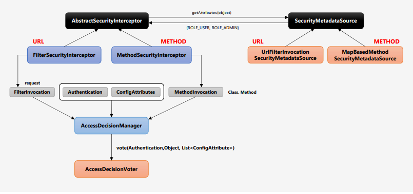
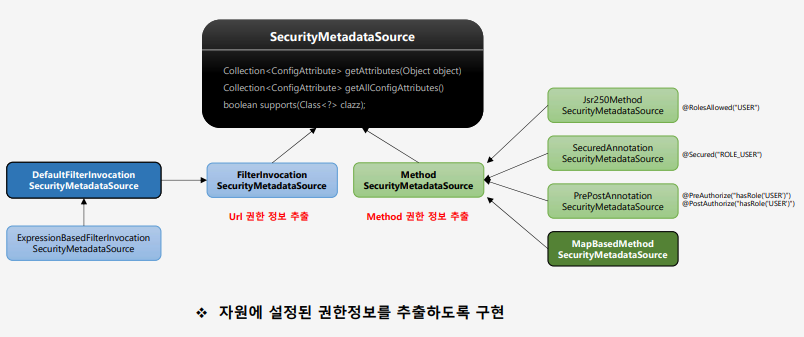
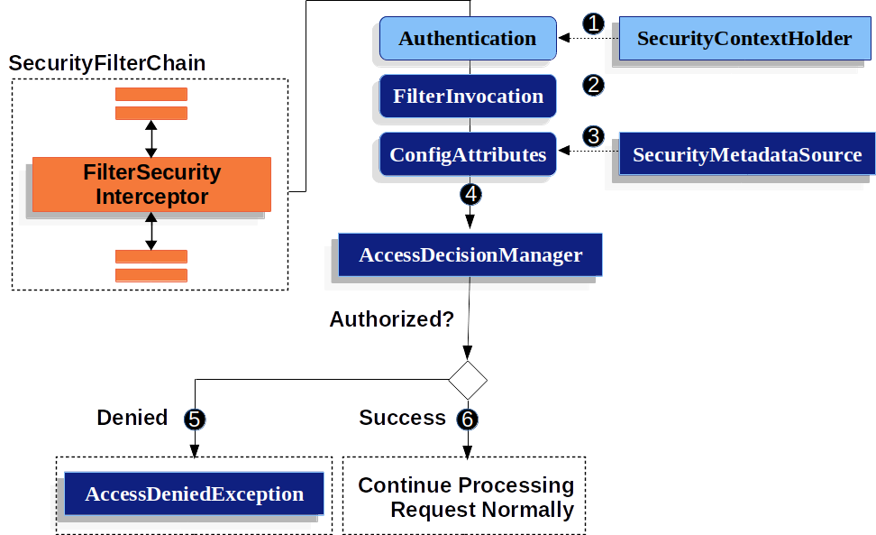

Spring Security(1) - 인증과 인가
스프링 시큐리티는 인증, 인가를 지원하고 주요 공격으로부터 어플리케이션을 보호해주는 스프링 표준 보안 프레임워크이다.
인증(Authentiation)
인증은 사용자가 누구인지를 증명하는 것이다. 사용자가 어플리케이션의 특정 리소스에 접근하고자 할 때 그 사용자가 누구인지를 확인할 때 사용한다.
주로 id와 password를 통해 인증을 수행하며, FormLogin 기준으로 작성해보겠다. 우선 Authentication Flow를 살펴보기 전에 일부 관련 객체를 설명하도록 하겠다.
Authentication 객체

Authentication: 말 그대로 인증 객체이다. 인증에 필요한 정보를 담고있다.- Principal : 사용자를 식별하기 위한 정보이다. 사용자의 Id, 혹은 User 객체를 저장한다.
- Credentials : 사용자 비밀번호
- Authorities : 인증된 사용자의 권한 목록
SecurityContext: 위에서 설명한 인증 객체를 저장하는 보관소이다. 필요 시 인증 객체를 꺼내어 쓸 수 있는 기능을 제공한다. SecurityContextHolder에 Strategy와 함께 저장된다.SecurityContextHolder: SecurityContext + Strategy- SecurityContext
- Strategy : SecurityContext 객체의 저장 방식을 결정한다.
- 종류
- MODE_THREADLOCAL(default) : 스레드당 SecurityContext를 할당한다. 해당 스레드에서만 사용할 수 있다.
- MODE_INHERITABLETHREADLOCAL : 메인 스레드가 가지는 SecurityContext를 자식 스레드에서도 참조할 수 있도록 한다.
- MODE_GLOBAL : 어플리케이션 전역에서 단 하나의 SecurityContext를 저장한다. 따라서 모든 쓰레드는 해당 컨텍스트를 참조한다.
- 종류
AuthenticationManager와 AuthenticationProviders

AuthenticationManager 객체는 인증 요청 처리를 위한 인터페이스로서, 대표적이고 가장 많이 사용하는 구현체로 ProviderManager가 있다.
ProviderManager는 AuthenticationManager의 authenticate(Authentication aut) 메서드를 구현하고 있는데, 실제 인증 처리 역할을 수행하는 건 아니다. 이 객체는 AuthenticationProvider 리스트를 멤버로 가지고 있으며 AuthenticationProvider를 순회하며 적합한 객체를 찾아 인증 처리를 위임하는 역할만을 수행한다.
Authentication Flow

(1) 사용자는 로그인을 위해 서버측으로 username과 password를 보낸다. UsernameAuthenticationFilter는 이를 받아 Authentication의 구현체인 UsernamePasswordAuthenticationToken을 생성한다. UsernameAuthenticationFilter는 AbstractAuthenticationFilter를 상속받아 attemptAuthenticate를 구현한 클래스이다. (UsernamePasswordAuthenticationFilter의 attemptAuthentication 메서드 참고)
(2) 생성한 객체는 ProviderManager에게 넘기고, ProviderManager는 AuthenticationProvider 구현체들을 순회하며 적합한 Provider에게 인증 처리를 위임한다. (ProviderManager의 authenticate메서드 참고) - AuthenticationProvider 구현체들은 기본적으로 authentication, supports 메서드를 구현하고 있는데, 자신이 해당 인증을 처리하기 적합한 provider인지 그 결과를 ProviderManager에게 전달하여 적합한 Provider에게 위임할 수 있도록 한다.
(3), (4) 인증에 성공하면 SecurityContext에 인증 객체를 저장하며, 인증 실패시 인증 예외를 처리하는 방법에 대해서는 다른 게시글에 작성하도록 하겠다.
- 인증을 유지하기 위해 SecurityContext는 Session에 저장되며, 응답마다 SecurityContext는 clear되며 앞으론 Session에서 SecurityContext를 꺼내어 쓰게 된다. (SecurityContextPersistenceFilter 참고. - create SecurityContext & load SecurityContext from Session)

AuthenticationManager(ProviderManager)의 세부 동작 과정이다.
UserDetailsService에서는 username으로 사용자의 정보를 담은 객체(UserDetails)를 반환하고, 이를 호출했던 Provider는 UserDetails를 받아 passwordEncoder로 비밀번호를 검증한 뒤 이를 다시 ProviderManager에게 반환한다.
1번과 5의 각 Authentication 객체에서 담고 있는 데이터가 다름에 주목한다. 인증 요청이 들어올 때에는 해당 사용자를 검증하기 위한 데이터를 담고 있었다면, 인증이 완료된 후에는 그 외에 권한 정보 등을 담고 있다.(password는 제외)
이제 인증 객체는 context에 저장되어 전역적으로 사용될 수 있다.
인가(Authorization)
인증을 통해 사용자가 누구인지를 식별하였다면, 그 사용자가 어떠한 자원에 대해 허가를 받았는지를 확인하는 것이다.
인가는 세 가지 정보가 필요하다.
1) 누가(인증 정보 - Authentication)
1) 어떤 자원을 요청했고((URL방식 기준) 요청 정보 - FilterInvocation)
2) 그 자원을 사용하기 위한 조건(권한 정보 - ConfigAttribute)은 무엇인지
이 세 정보는 접근 결정 관리자인 AccessDecisionManager 구현체의 decide메서드를 호출하며 전달된다.
Authorization Flow를 분석하기 전에 관련 일부 객체를 살펴보겠다.
AbstractSecurityInterceptor

대표적인 구현체로 FilterSecurityInterceptor, MethodSecurityInterceptor 둘이 있고 각각 Url, Method 방식을 담당한다. 인증된 사용자에 대해 특정 요청의 승인/거부 여부를 최종적으로 결정한다. 상기한 세 정보를 AccessDicisionManager에게 보내는 역할을 한다.
SecurityMetadataSource

이 인터페이스는 세 추상 메서드를 선언하고 있다.
- Collection
getAttributes(Object object) - Collection
getAllConfigAttributes() - boolean supports(Class<?> clazz)
Url방식의 경우 DefaultFilterInvocationSecurityMetadataSource가 이를 구현하고 있는데, 사용자가 접근하고자 하는 Url 자원을 받아서 자신이 DB에서든 받아 가지고 있던 Key(자원) - Value(권한정보)의 map과 비교하여 해당하는 권한정보를 리턴한다.
AccessDeicisionManager
인증 정보, 요청 정보, 권한 정보를 이용해 사용자의 자원 접근 허용 여부를 결정하는 최종 주체이다.
구현체로 AffirmitiveBased, ConsesnsusBased, UnanimousBased가 있는데 각 클래스들은 접근 결정 방식에 따른 것이다.
이를 이해하기 위해선 Voter 클래스들에 대한 이해가 선행되어야 한다. 간략하게 설명하자면 각각이 규정한 조건에 따라 인가 여부에 투표하는 객체이다. (AccessDicisionVoter 섹션에서 설명)
- AffirmitiveBased : 여러 개의 Voter 클래스 중 하나라도 접근 허가를 낸 Voter가 있다면 접근 허가로 판단한다.
- ConsensusBased : 다수결로 결정하는데 동수일 때에는 기본적으로 접근 허가이고, allowEqualGrantedDeniedDecision으로 변경할 수 있다.(true(default), false)
- UnianimousBased : 모든 Voter가 만장일치로 접근을 승인해야 하며 그렇지 않은 경우 접근을 거부한다.
AccessDecisionVoter
AccessDicisionManager의 구현체인 AbstractAccessDecisionManager는 AccessDicisionVoter list를 멤버로 가지고 있다. AuthenticationManager - AuthenticationProivder와 같이 AccessDecisionManager도 이 Voter 구현체들에게 권한 심사를 위임한다.
권한 심사를 위임할 때는 필터로부터 전해받은 인증 정보, 요청 정보, 권한 정보를 전달한다.
AccessDeicisionVoter의 vote 메서드 리턴 값은 int로서 접근허용(ACCESS_GRANTED : 1), 접근 거부(ACCESS_DENIED : 0), 접근 보류(ACCESS_ABSTAIN : -1)이다. 접근 보류의 경우 해당 Voter로는 요청에 대한 접근 허가를 결정할 수 없는 경우에 사용한다.
Authorization Flow

(1) SecurityContextHolder에서 Authentication 객체를 찾는다. 인증되지 않은 사용자일 경우 AuhthenticationException이 발생한다.
(2) FilterInvocation : request, response 객체가 null이 아니며 HttpServletRequest, HttpServletResponse 객체임을 보장한다. 뿐만 아니라 Security System Class들이 Filter 환경에의 접근을 가능하게 해준다.
(3) FilterInvocation을 MetadataSource로 넘겨 ConfigAttribute를 가져오는데, 이는 요청 정보를 이용해 해당 자원 접근에 필요한 권한 정보를 담고 있다.
(4 이제까지 얻은 세 정보를 AccessDicisionManager에게 넘긴다.
(5, 6) 인가 거절시 AccessDeniedException 발생한다.
References
스프링 시큐리티 공식 레퍼런스
정수원 - 스프링 시큐리티 - Spring Boot 기반으로 개발하는 Spring Security